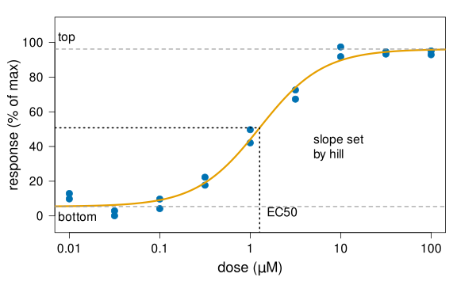
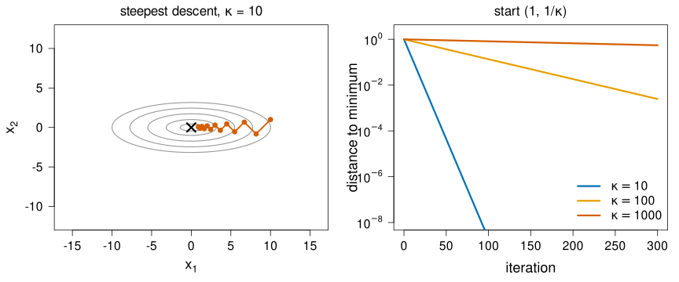
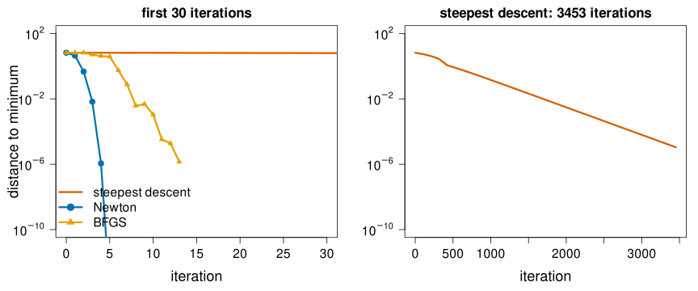
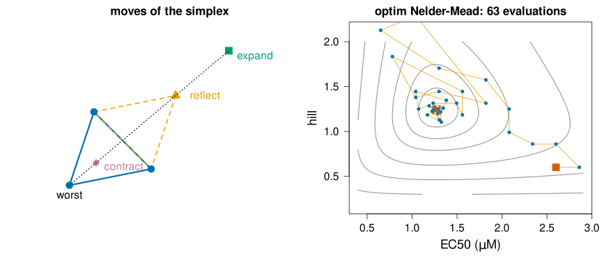

Fitting a model means finding the parameters that make a misfit (a sum of squares, a negative log-likelihood) as small as possible. With more than one parameter we need new tools.
The gradient (the slopes in every direction) and the Hessian (the curvatures). Both are Jacobians, which you met in Newton for systems of equations.
Steepest descent with a backtracking line search, and why it zig-zags when the Hessian is badly conditioned.
Newton’s method for minimisation: fast near the minimum, unreliable far from it.
Quasi-Newton (BFGS, L-BFGS): build the curvature from gradients. Nelder–Mead: no derivatives at all.
What optim and scipy.optimize.minimize do, and why scaling and starting values matter. One slide on stochastic gradient descent.
Biology: fitting a 4-parameter logistic dose–response curve (EC50, Hill slope, top, bottom). We also explain the growth-curve failure from Why numerical analysis?.
A biology problem: a dose–response curve

A reporter assay: 9 doses of an agonist, 2 wells each. The 4-parameter logistic (4PL):
m(c) = b + \frac{t - b}{1 + (\mathrm{EC50}/c)^{h}}
b, t: bottom and top plateaus (% of max)
\mathrm{EC50}: dose at half response (µM)
h: Hill slope
Find the 4 numbers that minimise the sum of squared errors \mathrm{SSE}(\mathbf p) = \sum_i (y_i - m(c_i))^2. There is no formula: we must search.
Fitting is minimising
dose <-rep(10^seq(-2, 2, by =0.5), each =2) # µM: 9 doses, 2 wells eachy <-c(12.9, 9.8, 2.9, 0.1, 4.2, 9.7, 17.7, 22.3, 49.7, 42.1,67.3, 72.6, 97.4, 91.8, 94.6, 93.3, 92.9, 95.1) # % of max responsef4 <-function(p, c) # p = (bottom, top, EC50, hill) p[1] + (p[2] - p[1]) / (1+ (p[3] / c)^p[4])sse <-function(p) sum((y -f4(p, dose))^2)p0 <-c(0, 100, 1, 1) # a first guess, read off the plotsse(p0)# [1] 558.9029
sse is an ordinary R function of a vector p of length 4. Every method today only needs to call it (and perhaps its gradient).
The best fit has \mathrm{SSE} = 314.924 at \mathbf p^* = (5.39,\ 96.17,\ 1.271,\ 1.240). How do we get there from \mathbf p_0?
At a minimum of f(x): f'(x^*) = 0 and f''(x^*) > 0. Newton x - f'/f'' is fast, but only safe with checks: f'' > 0, and f must decrease (else shorten the step).
The JacobianJ of \mathbf F: \mathbb R^n \to \mathbb R^m has entries J_{ij} = \partial F_i / \partial x_j (row = output, column = input).
Newton for \mathbf F(\mathbf x) = \mathbf 0: solve J\,\boldsymbol\delta = -\mathbf F, set \mathbf x \leftarrow \mathbf x + \boldsymbol\delta. Quadratic convergence near the root.
A finite-difference Jacobian costs n+1 evaluations of \mathbf F, step h \approx \sqrt\varepsilon; numDeriv::jacobian does it more accurately.
Today: minimum of f(\mathbf x) = a point where all slopes are zero and the surface curves up in every direction.
The gradient: all slopes at once
For f(x_1, x_2) = x_1^2 + x_1x_2 + 3x_2^2 at (2, 1):
Curvature differs by a factor 550 between directions: the valley is long and narrow. This is the condition number\kappa(H) from Pivoting, norms and conditioning.
Steepest descent with a fixed step
Go downhill: \mathbf x_{k+1} = \mathbf x_k - \alpha\, \nabla f(\mathbf x_k), with a fixed step size\alpha.
x <- p0for (k in1:5000) x <- x -1e-4*grad_sse(x)sse(x)# [1] 315.1635 # 5000 steps, still not at 314.924x <- p0for (k in1:20) x <- x -6e-4*grad_sse(x)sse(x)# [1] NaN # overshoots: EC50 < 0 after 10 steps
Too small: slow. Too large: each step overshoots the valley and the iteration blows up.
On a quadratic, steepest descent is stable only for \alpha < 2/\lambda_{\max}; here 2/3709 = 5.4\times10^{-4}. Nobody knows \lambda_{\max} in advance.
Backtracking line search (Armijo)
Try \alpha = 1; halve it until the step decreases f enough: f(\mathbf x - \alpha \mathbf g) \le f(\mathbf x) - c\,\alpha\, \|\mathbf g\|^2, with c = 10^{-4}.
sd_armijo <-function(f, g, x, tol =1e-4, maxit =1e4) {for (k in1:maxit) { gk <-g(x)if (sqrt(sum(gk^2)) < tol) break# gradient ~ 0: stop a <-1while (!isTRUE(f(x - a * gk) <=f(x) -1e-4* a *sum(gk^2))) a <- a /2# backtrack x <- x - a * gk }list(par = x, steps = k -1)}sd_armijo(sse, grad_sse, p0)$steps# [1] 3453
isTRUE also rejects a step that gives NaN. Never diverges; but 3453 steps.
Why steepest descent zig-zags

On a long narrow valley, -\nabla f points across the valley, not along it. Each step overshoots to the other side.
With exact line search the error shrinks per step by about \dfrac{\kappa - 1}{\kappa + 1}. For the 4PL, \kappa = 550: 0.9964 per step, about 3800 steps per 6 digits.
Newton’s method for minimisation
Minimum \Rightarrow\nabla f = \mathbf 0: a system of n equations. Apply Newton for systems with \mathbf F = \nabla f and J = H:
H(\mathbf x_k)\, \mathbf s = -\nabla f(\mathbf x_k), \qquad \mathbf x_{k+1} = \mathbf x_k + \mathbf s
Newton for systems
Newton for minimisation
\mathbf F(\mathbf x) = \mathbf 0
\nabla f(\mathbf x) = \mathbf 0
Jacobian J
Hessian H (= Jacobian of \nabla f)
solve(J, -F)
solve(H, -g)
Same step = the minimum of the quadratic model. On a quadratic f, one step is exact. Toy example from (2, 1): \mathbf s = -H^{-1}(5, 8)^\mathsf{T} = (-2, -1), straight to (0, 0).
Quadratic convergence near the minimum. The condition number does not slow it down.
Newton in R
newton_min <-function(f, g, H, x, tol =1e-4, maxit =50) {for (k in1:maxit) { gk <-g(x)if (sqrt(sum(gk^2)) < tol) break s <-solve(H(x), -gk) # Newton direction a <-1# line search, as beforewhile (!isTRUE(f(x + a * s) <=f(x) +1e-4* a *sum(gk * s))) a <- a /2 x <- x + a * s }list(par = x, steps = k -1)}newton_min(sse, grad_sse, hess, p0)$steps# [1] 5
step
0
1
2
3
4
5
SSE
558.90
395.01
315.68
314.92418
314.92395944
314.92395944
\lVert\nabla \mathrm{SSE}\rVert
1128
218
11.6
0.735
1.4\times10^{-4}
2.2\times10^{-11}
Three methods on the same fit

Newton: 5 steps. BFGS (in a few slides): 13 steps, gradients only. Steepest descent: a straight line on a log axis, linear convergence, slope set by \kappa.
When Newton fails
Start from a worse guess, \mathrm{EC50} = 10 µM: \mathbf p = (0, 100, 10, 1).
Two negative eigenvalues: the quadratic model has no minimum (a saddle). Pure Newton steps head for any point with \nabla f = 0; after 20 steps: EC50 = 86, hill = 16, \mathrm{SSE} = 21188.
Check: eigenvalues of H, or \nabla f^\mathsf{T}\mathbf s < 0 (a descent direction); a line search only helps if \mathbf s goes downhill.
Fixes: make H positive definite (add \mu I; 9 steps to the minimum from here), a trust region, or quasi-Newton.
Quasi-Newton: learn the curvature from gradients
The secant idea from Newton and secant methods: replace f'' by a slope of f' between two points. In n dimensions, with step \mathbf s_k = \mathbf x_{k+1} - \mathbf x_k and gradient change \mathbf y_k = \nabla f_{k+1} - \nabla f_k:
BFGS (Broyden, Fletcher, Goldfarb, Shanno, 1970) picks the update closest to B_k that satisfies it:
B_{k+1} = V^\mathsf{T} B_k V + \rho\, \mathbf s_k \mathbf s_k^\mathsf{T}, \qquad V = I - \rho\, \mathbf y_k \mathbf s_k^\mathsf{T}, \quad \rho = 1/(\mathbf y_k^\mathsf{T}\mathbf s_k)
Start from B_0 = I (first step = steepest descent). Direction -B_k \nabla f_k: no Hessian, no linear solve.
If \mathbf y_k^\mathsf{T}\mathbf s_k > 0, B stays positive definite: every direction goes downhill.
BFGS in R
bfgs <-function(f, g, x, tol =1e-4, maxit =200) { n <-length(x); B <-diag(n); gk <-g(x) # B ~ inverse Hessianfor (k in1:maxit) {if (sqrt(sum(gk^2)) < tol) break s <--drop(B %*% gk); a <-1while (!isTRUE(f(x + a*s) <=f(x) +1e-4* a *sum(gk*s))) a <- a /2 s <- a * s; x <- x + s; gn <-g(x); yv <- gn - gk; gk <- gnif ((sy <-sum(yv * s)) >0) { # curvature check V <-diag(n) -outer(yv, s) / sy B <-t(V) %*% B %*% V +outer(s, s) / sy } }list(par = x, steps = k -1)}bfgs(sse, grad_sse, p0)$steps# [1] 13
13 steps, one gradient each, plus backtracking. Superlinear convergence; no second derivatives.
L-BFGS: when there are many parameters
BFGS stores an n \times n matrix. For n = 10^6 parameters (an image, a genome-wide model, a neural network) that is 8 \times 10^{12} bytes.
L-BFGS (limited-memory BFGS) never forms B. It keeps the last m pairs (\mathbf s_k, \mathbf y_k), typically m = 5 to 20, and computes -B\nabla f from them in O(mn) operations.
Each step costs about as much as a steepest-descent step, but converges almost as fast as BFGS.
In R: optim(method = "L-BFGS-B") (the B is for bounds, e.g. lower = 0). In Python: minimize(method="L-BFGS-B"), the default when bounds are given.
Nelder–Mead: no derivatives at all

Keep n + 1 points (a simplex: a triangle in 2-D). Replace the worst by its reflection through the others; expand if that was very good, contract if bad, shrink if nothing helps.
Needs only f: works for noisy or non-smooth functions. optim’s default. Slow, and it can stop at a non-minimum, especially in many dimensions.
No gradient given → finite differences: R’s optim uses central differences with ndeps = 1e-3 (an absolute step!); scipy uses forward differences with h \approx \sqrt\varepsilon\max(1, |x|).
Stopping: relative change in f below reltol\approx 1.5\times10^{-8} (R), gradient norm below gtol= 10^{-5} (scipy BFGS). maxit = 500 for Nelder–Mead, 100 for BFGS in R.
convergence = 0 means “a stopping rule was met”, not “this is the minimum”.
The 4PL with optim
for (m inc("Nelder-Mead", "BFGS", "CG", "L-BFGS-B")) { o <-optim(p0, sse, method = m)cat(sprintf("%-11s SSE %.4f EC50 %.4f fn %3d gr %3s conv %d\n", m, o$value, o$par[3], o$counts[1], o$counts[2], o$convergence))}# Nelder-Mead SSE 314.9240 EC50 1.2711 fn 335 gr NA conv 0# BFGS SSE 314.9240 EC50 1.2711 fn 40 gr 11 conv 0# CG SSE 321.2024 EC50 1.2765 fn 333 gr 101 conv 1# L-BFGS-B SSE 314.9240 EC50 1.2710 fn 36 gr 36 conv 0
fn, gr: calls of sse and of the (finite-difference) gradient; each gr costs 8 more sse calls.
Conjugate gradients hit maxit = 100 (conv 1): another victim of \kappa = 550.
Passing the analytic gradient, optim(p0, sse, grad_sse, method = "BFGS"), saves the finite-difference calls.
“EC50 is about 1” is now 1000 times too small. The curve sits left of every dose; BFGS slides to a flat line at the mean (hill = -13.8) and reports success.
Even from a good start (EC50 = 1000), \kappa(H) = 1.9\times10^{6} and BFGS stops early: SSE 314.9246, 109 calls. With control = list(parscale = c(1, 100, 1000, 1)): 314.9240, 36 calls.
Back to the growth curve
Why numerical analysis?: logistic fit, time in minutes, start r = 0.5 (“per hour” by habit).
grad(sse_min, c(r =0.5, K =1, N0 =0.05)) # time in minutes# [1] 0.000 3.940 0.098optim(c(r =0.5, K =1, N0 =0.05), sse_min, method ="BFGS")$par# r K N0# 0.5000000000 0.8358333304 0.0009999665optim(c(r =0.5, K =1, N0 =0.05), sse_h)$par # time in hours# r K N0# 0.5241071 1.1913604 0.0165278
At r = 0.5/min the model reaches K within minutes, long before the first reading: \partial\,\mathrm{SSE}/\partial r \approx 4\times10^{-23}. BFGS never moves r; Nelder–Mead wanders on the plateau until its corner values agree (to r = 0.68, SSE 2.23, as in the intro).
In hours the natural guess is right, and \kappa drops from 1.2\times10^4 to 1.0\times10^3. Choose units so parameters are near 1.
Starting values and multistart
Start from the data: bottom ≈ min(y), top ≈ max(y), EC50 ≈ dose where y crosses halfway, hill ≈ 1. R’s SSfpl self-start model for nls does this for you.
Multistart: run from many starts, keep the best, and look at how many agree.
Each step uses the gradient of a small random minibatch (say 32 points): a noisy but cheap estimate of \nabla f.
No line search: the learning rate\alpha_k is set by hand and decreased over time; variants (momentum, Adam) adapt it per parameter, a cheap form of scaling.
This is how neural networks are trained (gradients by automatic differentiation). For an 18-point dose–response curve, use BFGS.
Checklist for a fit
Check the gradient against numDeriv::grad before using it (agreement to ~10^{-6} relative, not ~1).
Look at the convergence code and the counts; maxit reached means “not finished”.
Plot the fitted curve over the data. A flat line or a step is a degenerate fit.
Units and scale: parameters near 1 (µM, hours, log EC50), or parscale.
Start from the data, and multistart: do the answers agree?
At the answer: gradient near 0 and Hessian eigenvalues all positive (a minimum, not a saddle or plateau). A huge \kappa warns of poorly determined parameters.
Method: smooth with gradient → BFGS (L-BFGS for many parameters); noisy or non-smooth → Nelder–Mead; sum of squares → Nonlinear least squares and ODE fitting.
Summary
Gradient\nabla f: Jacobian of a scalar function, points uphill. HessianH: Jacobian of the gradient. Minimum: \nabla f = \mathbf 0, H positive definite.
Steepest descent + backtracking (Armijo): always goes downhill, but converges linearly at a rate set by \kappa(H); it zig-zags in narrow valleys.
Newton: solve H\mathbf s = -\nabla f. Quadratic convergence near the minimum; can head for saddles when H is not positive definite.
BFGS builds H^{-1} from gradient differences; L-BFGS stores only a few of them. Nelder–Mead uses only f.
optim (default Nelder–Mead) and minimize (default BFGS) report “converged” when a stopping rule is met. Scale the parameters, start from the data, multistart, check.